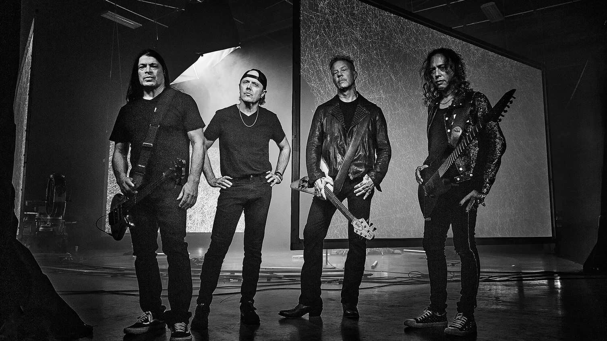
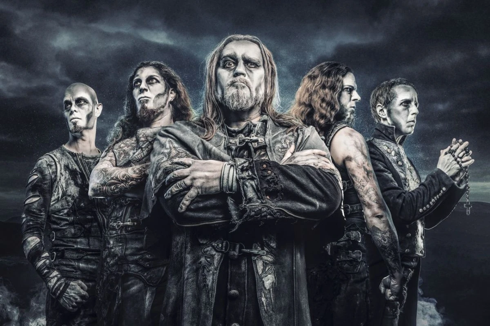
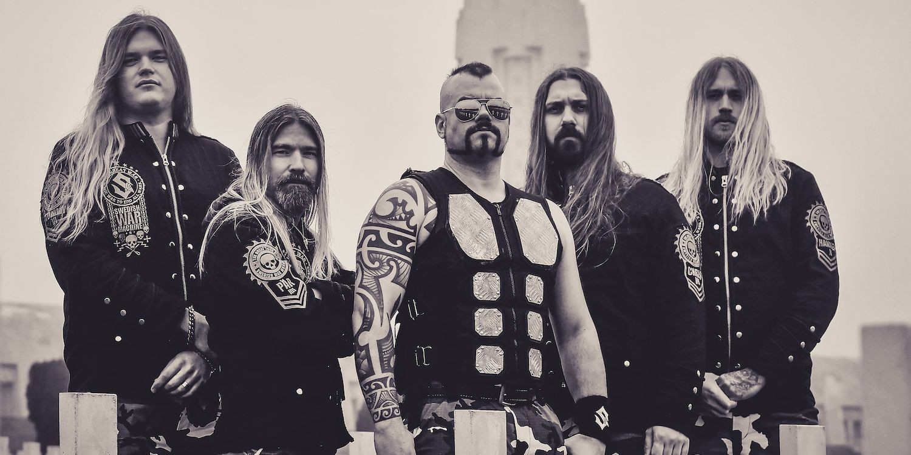

Wstęp
Witaj, nazywam się Mateusz Augustyn. Jako gitarzysta i fan muzyki metalowaj chciałbym Ci przedstawić kilka metalowych zespołów, które według mnie są warte zainteresowania. Miłego czytania!
Metallica
Metallica to amerykańska legenda muzyki metalowej, która powstała w 1981 roku w Los Angeles. Zespół jest znany z tworzenia muzyki z gatunku thrash metal, choć w swojej karierze eksperymentował również z innymi stylami, takimi jak heavy metal, hard rock czy metal alternatywny. Metallica jest uważana za jedną z najbardziej wpływowych grup w historii muzyki metalowej. Ich albumy, takie jak "Master of Puppets", "Ride the Lightning" czy "Metallica" (znany również jako "The Black Album"), są uznawane za klasyki gatunku. Niezwykle intensywne koncerty oraz charakterystyczne dla nich teksty, które często dotykają tematów takich jak polityka, wojna czy osobiste demony, sprawiają, że Metallica ma lojalną bazę fanów na całym świecie. Pomimo różnych zmian w stylu muzycznym i składzie zespołu na przestrzeni lat, Metallica pozostaje jednym z najbardziej rozpoznawalnych i szanowanych zespołów metalowych na świecie
Powerwolf
Powerwolf to niemiecki zespół power metalowy, który został założony w 2003 roku. Grupa słynie z charakterystycznego stylu muzycznego, który łączy w sobie dynamiczne riffy, epickie melodyjne linie wokalne oraz tematykę związana z religią, historią i gotycką estetyką. Powerwolf jest znany nie tylko ze swojej muzyki, ale również z bogatej estetyki scenicznej, która często obejmuje wampiryczne i gotyckie motywy. Teksty utworów Powerwolf często poruszają tematykę religijną i historyczną, często oparte na symbolice chrześcijańskiej oraz mitologii. Ich albumy, takie jak "Blessed & Possessed", "Blood of the Saints" czy "The Sacrament of Sin", zdobyły uznanie fanów muzyki metalowej na całym świecie, umacniając pozycję zespołu jako jednego z czołowych przedstawicieli power metalu.
Iron maiden

Iron Maiden to brytyjski zespół heavymetalowy, który został założony w 1975 roku w Londynie. Zespół jest znany ze swojego charakterystycznego brzmienia, epickich utworów oraz kultowego maskotki Eddie'ego, która pojawia się na większości ich okładek albumów. Iron Maiden słynie również z dynamicznych i widowiskowych koncertów na całym świecie, podczas których prezentują niezrównane umiejętności scenicznego występowania oraz spektakularne efekty wizualne. Mimo licznych zmian w składzie i ewolucji stylu muzycznego, Iron Maiden pozostaje jednym z najbardziej wpływowych zespołów w historii muzyki metalowej, a ich muzyka nadal przyciąga setki tysięcy fanów z całego świata
Sabaton
Sabaton to szwedzki zespół heavymetalowy założony w 1999 roku. Grupa jest znana z charakterystycznego stylu muzycznego, który łączy w sobie elementy power metalu, heavymetalu oraz hard rocka. Teksty piosenek Sabaton często opowiadają o historycznych wydarzeniach, bitwach, bohaterach wojennych i dramatach wojennych. Muzyka Sabaton często nawiązuje do wydarzeń historycznych, takich jak II wojna światowa, bitwy o Stalingrad, czy bitwa pod Wizną. Zespół zdobył międzynarodową popularność dzięki swoim tekstom, które często są źródłem inspiracji dla fanów do nauki historii. Ich melodyjne utwory, mocne riffy i energetyczne występy na koncertach przyciągają szerokie grono fanów metalu. Niektóre z najbardziej znanych albumów Sabaton to "Primo Victoria", "The Art of War", "Carolus Rex" oraz "Heroes". Grupa zyskała również uznanie za swoje widowiskowe koncerty, które często wzbogacane są efektami wizualnymi i narracjami na temat historycznych wydarzeń przedstawianych w ich utworach. Sabaton jest uważany za jeden z najbardziej innowacyjnych zespołów w gatunku heavymetalowym i cieszy się dużym uznaniem zarówno wśród krytyków, jak i fanów muzyki metalowej na całym świecie.
Gloryhammer
Gloryhammer to szkocki zespół power metalowy, który został założony w 2010 roku przez Christophera Bowesa, znanego również jako Christopher Bowes znanego z zespołu Alestorm. Gloryhammer wyróżnia się charakterystycznym stylem muzycznym, który łączy w sobie elementy power metalu z epicką narracją fantasy. Muzyka Gloryhammer to mieszanka epickich melodii, szybkich riffów, symfonicznych aranżacji oraz tekstów inspirowanych tematyką fantasy, zbrojnych konfliktów i kosmicznych przygód. Ich albumy stanowią ciągłą opowieść zatytułowaną "The Gloryhammer Saga", która opowiada o bohaterskich podróżach kosmicznego wojownika, Angus McFife, w walce przeciwko siłom zła. Najbardziej znane albumy zespołu to "Tales from the Kingdom of Fife" (2013), "Space 1992: Rise of the Chaos Wizards" (2015) oraz "Legends from Beyond the Galactic Terrorvortex" (2019). Gloryhammer słynie nie tylko z muzyki, ale także z widowiskowych koncertów, które często wzbogacane są o teatralne elementy i kostiumy, tworząc niezapomniane wrażenia dla fanów. Choć Gloryhammer nie jest jednym z najbardziej komercyjnych zespołów metalowych, zdobył sobie lojalną grupę fanów, szczególnie wśród miłośników muzyki power metalowej oraz fantastyki. Jego unikalne podejście do gatunku sprawia, że jest rozpoznawalny i ceniony w społeczności metalowej